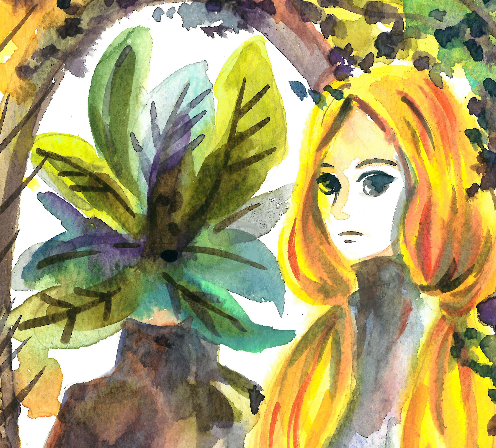

AB WANG 明明是美術卻身兼多職的平凡上班族，孤島與浪潮的集合體。 最近開始用植物與女巫編織出一系列的故事。 很喜歡插畫也喜歡設計，正嘗試著2者兼具並反映現實生活。

AB is a freelance illustrator and a visual artist based in Taiwan. An illustrator who prefer to use many materials to depict my pictures. There are many inspiration from life, book, history, movie, culture, exhibitions. I like to combine much elements together, using line and colour, sometimes it will have the different result on each project. I prefer to use watercolour, pencil, ink, colour pencil on my work, and then use photoshop to complete it.
展覽經歷 Exhibition
2020 Plant,Cloth,Season【植服季】創作聯展
2019 MA Illustration Show, Gallery Different
2013 Goforward, 銘傳大學商業設計所畢業展覽, 中山創意基地
學歷Education & Training 2018-2019 MA Illustration, Kingston University London 英國 金斯頓大學 插畫研究所 2011-2013 銘傳大學 商業設計研究所
2008-2011 輔仁大學 歷史學系
This project explores the relationship between misogyny and women’s literature. From this starting point I created visual responses that speak to five major areas: Career, Birth, Sex, Body Control and Hate Speech. My work incorporates a layered approach through the use of transparent paper to metaphorically represent the barriers faced by women in our society.
畢製主題以歷史上的女巫與現代厭女症為連繫，
共分五個面相: 職場，生育，性自主，身體掌控，
仇恨言論，來討論現代女性面對的厭女症狀。
A girl who lived in a society that people obsessed with ferns. Because over growing and human’s greedy, people lost their face and didn’t notice they live in a huge cage actually. In the end, only the girl survived for leaving the cage. 虛構的19 世紀，人類因為沉迷於蒐集蕨類植物，犧牲 一切卻不肯理會孩子的勸告，而導致滅亡的故事。
Feng Hsui Tarot Luo shu square
風水：塔羅 洛書
Although we live in a high technology society with science, people still want to know their destiny. In East society people like to discover what kind of things will appear on their future ,they prefer to use the conception from Feng Hsui to observed what kind of elements they can improve for fortune. In my visual work, I put a number on the diamond shape on the top of cards, on the bottom are these card’s elements. On the right and left’s frame is different elements: earth, water, fire, wood. 華人社會著迷於使用風水來預測未來或生活。 以歷史上的洛書和西方塔羅結合，使用不同視覺元素設計9 張卡牌，每張牌代表不同意義，根據不同組合來測試個人缺乏何種元素。
WU-YU Dance Conference booklet 舞雩舞集 節目冊(2017)
Designed for WU-YU Dance Conference to celebrate theyhave established 25 years.
The client wanted to apply three concepts: Magic, East
traditional dance and Spanish cultures to combine them
together in each image. Using bright colours to present childern's performance.
The book cover presents the dancing spirit like a tree
growing up year by year like life. 成立25 周年的孩童舞蹈團，客戶需求為以插圖呈現多種舞曲的概念意象，封面希望能呈現25 年以來的向下扎根而逐漸茁壯成長，生生不息的傳統與現代舞蹈之美。